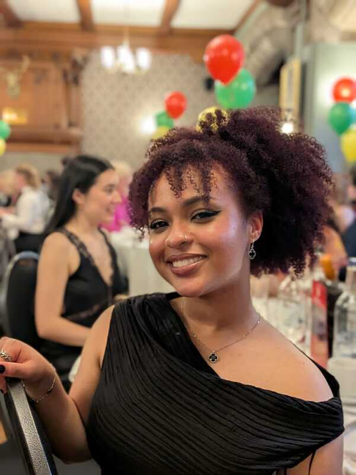
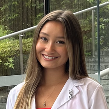
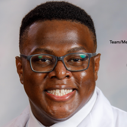
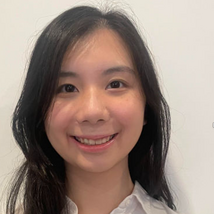
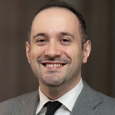
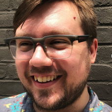
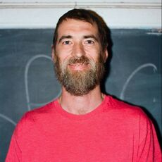
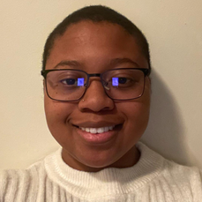
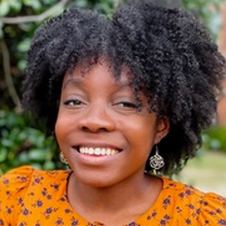

Principal Investigator
Marianne C. Reddan, PhD
Dr. Marianne Reddan is a Lecturer (Assistant Professor) in the School of Psychology and Neuroscience at the University of Glasgow. She earned her PhDs in Psychology & Neuroscience and Cognitive Science from the University of Colorado Boulder under the mentorship of Dr. Tor Wager. There, her research focused on the neural mechanisms of emotion regulation and social learning in the context of pain. She completed her postdoctoral training in the Stanford Social Neuroscience Lab directed by Dr. Jamil Zaki. As a K12 Scholar at Albert Einstein College of Medicine, she expanded her training to include pain medicine (mentor: Dr. Hector Perez) and social epidemiology (mentor: Dr. Earle Chambers). Her research combines diverse methodologies, including functional MRI, psychophysiology, and computational modeling, to understand how beliefs, shaped by both personal and socioecological factors, impact pain and perception.
Dr. Marianne Reddan is a Lecturer (Assistant Professor) in the School of Psychology and Neuroscience at the University of Glasgow. She earned her PhDs in Psychology & Neuroscience and Cognitive Science from the University of Colorado Boulder under the mentorship of Dr. Tor Wager. There, her research focused on the neural mechanisms of emotion regulation and social learning in the context of pain. She completed her postdoctoral training in the Stanford Social Neuroscience Lab directed by Dr. Jamil Zaki. As a K12 Scholar at Albert Einstein College of Medicine, she expanded her training to include pain medicine (mentor: Dr. Hector Perez) and social epidemiology (mentor: Dr. Earle Chambers). Her research combines diverse methodologies, including functional MRI, psychophysiology, and computational modeling, to understand how beliefs, shaped by both personal and socioecological factors, impact pain and perception.
| CV March 2026 |
Current Students

Batseba Asmelash, Neuroscience BSc (Hons) Student at University of Glasgow
Batseba is leading a neuroimaging study investigating how socioeconomic deprivation in Glasgow influences brain networks involved in harm prediction. She was awarded a Carnegie Vacation Scholarship in support of this work.
Batseba is leading a neuroimaging study investigating how socioeconomic deprivation in Glasgow influences brain networks involved in harm prediction. She was awarded a Carnegie Vacation Scholarship in support of this work.
Ana Mateu Alvaro, MSc and SPN/MHW Summer Intern at University of Glasgow
Ana is leading a reinforcement learning study of barriers to health care and pain that is co-supervised by Dr. Liana Romaniuk.
Ana is leading a reinforcement learning study of barriers to health care and pain that is co-supervised by Dr. Liana Romaniuk.

Sydney Gilmore, Medical Student at AECOM
Sydney is a medical student. She earned her Bachelor of Science in Biological Sciences from the University of Pittsburgh, where she pursued two different research focuses: investigating educational interventions to enhance early elementary mathematical skills and exploring potential biomarkers to predict treatment responses to immune checkpoint therapy in head and neck squamous cell carcinomas. Sydney’s current interests center on understanding how internalized resource availability can shape the experience of pain. Outside of the lab, she enjoys painting, crocheting, hiking, and traveling.
Sydney is a medical student. She earned her Bachelor of Science in Biological Sciences from the University of Pittsburgh, where she pursued two different research focuses: investigating educational interventions to enhance early elementary mathematical skills and exploring potential biomarkers to predict treatment responses to immune checkpoint therapy in head and neck squamous cell carcinomas. Sydney’s current interests center on understanding how internalized resource availability can shape the experience of pain. Outside of the lab, she enjoys painting, crocheting, hiking, and traveling.

Michael Irving, Medical Student at AECOM
Michael is interested in how societal structures influence pain responding. He is investigating this question with both large scale survey data and fMRI.
Michael is interested in how societal structures influence pain responding. He is investigating this question with both large scale survey data and fMRI.

Joyce Lei, Medical Student at AECOM
Joyce is a medical student at the Albert Einstein College of Medicine. Before medical school, she earned her BA in Biological Sciences at Cornell University, where she also participated in research exploring molecular mechanisms of neurodegeneration of somatosensory neurons in fruit flies. After graduating, she spent two gap years doing research at the Tisch Multiple Sclerosis (MS) Research Center of NY, where she studied the role of Epstein-Barr Virus (EBV) in the pathogenesis of MS. She is currently interested in studying how social determinants of health influence brain age and hopes to pursue Diagnostic Radiology in the future. Outside of the lab, she enjoys trying new restaurants, gaming, traveling, and spending time with her cat Luna.
Joyce is a medical student at the Albert Einstein College of Medicine. Before medical school, she earned her BA in Biological Sciences at Cornell University, where she also participated in research exploring molecular mechanisms of neurodegeneration of somatosensory neurons in fruit flies. After graduating, she spent two gap years doing research at the Tisch Multiple Sclerosis (MS) Research Center of NY, where she studied the role of Epstein-Barr Virus (EBV) in the pathogenesis of MS. She is currently interested in studying how social determinants of health influence brain age and hopes to pursue Diagnostic Radiology in the future. Outside of the lab, she enjoys trying new restaurants, gaming, traveling, and spending time with her cat Luna.
Lucy Liu, Medical Student at AECOM
Lucy is interested in how early life experiences related to attachment influence pain experiencing later in life. She is investigating this both in large scale survey data and a local fMRI sample of the Bronx and Upper Manhattan.
Lucy is interested in how early life experiences related to attachment influence pain experiencing later in life. She is investigating this both in large scale survey data and a local fMRI sample of the Bronx and Upper Manhattan.
Sanya Nair, Medical Student at AECOM
Sanya is a first-year medical student interested in work addressing social determinants of health and barriers to healthcare access to improve outcomes for all. In the lab, she is investigating pain and barriers to care among individuals with chronic pain and opioid use disorders using a combination of survey data, patient storytelling, and neuroimaging.
Sanya is a first-year medical student interested in work addressing social determinants of health and barriers to healthcare access to improve outcomes for all. In the lab, she is investigating pain and barriers to care among individuals with chronic pain and opioid use disorders using a combination of survey data, patient storytelling, and neuroimaging.
Co-Investigators & Collaborators
|
 Hector Perez, MD, MS
Hector is Associate Professor of Medicine at Montefiore Einstein. His research focuses on non-pharmacological interventions to improve quality of life in patients at the intersection of chronic pain and opioid use disorder and opioid misuse. |
Cara S. Stephenson-Hunter, PhD
Dr. Stephenson-Hunter is a researcher and educator, born and raised in the South Bronx. She holds a Ph.D. in Health Psychology and is an Assistant Professor in the Department of Family and Social Medicine. Dr. Stephenson-Hunter’s work investigates lived experience as it influences health and educational behavior and outcomes. Her research focuses on agency and motivation for populations with externalized perceptions of control. Her interdisciplinary training in psychology, health education, and epidemiology inspires her to translate these findings into culturally and theoretically sound practices and interventions.
Dr. Stephenson-Hunter is a researcher and educator, born and raised in the South Bronx. She holds a Ph.D. in Health Psychology and is an Assistant Professor in the Department of Family and Social Medicine. Dr. Stephenson-Hunter’s work investigates lived experience as it influences health and educational behavior and outcomes. Her research focuses on agency and motivation for populations with externalized perceptions of control. Her interdisciplinary training in psychology, health education, and epidemiology inspires her to translate these findings into culturally and theoretically sound practices and interventions.
|
 John (Jack) Keefe, PhD
Dr. Keefe is an Assistant Professor in the Department of Psychology at Long Island University. Jack is a clinical psychologist and a machine learning wiz who has a special focus on understanding attachment-related psychological disorder and stress disorders. He is a co-Investigator of the lab's attachment-pain projects. website |
Lab Affiliates

Brad Phillips, Community Collaborator on IMPOWR chronic pain study
Brad is an artist, author, essayist and critic. His fiction and nonfiction has been published in The Paris Review, Harper's, Granta, Playboy and elsewhere. He has exhibited his paintings widely, including in Zurich, London, Los Angeles and New York. He lives in New York with his wife Cristine and their cat Cherry.
Brad is an artist, author, essayist and critic. His fiction and nonfiction has been published in The Paris Review, Harper's, Granta, Playboy and elsewhere. He has exhibited his paintings widely, including in Zurich, London, Los Angeles and New York. He lives in New York with his wife Cristine and their cat Cherry.

Jasmin Richard, Former Study Coordinator
Jasmin was a volunteer research coordinator who truly helped to ignite our lab/research program before it could get off the ground. Jasmin is very interested in understanding how a person's position in society "gets under their skin" and influences their brain and behavior. She is currently a research coordinator at Mount Sinai School of Medicine. She will be applying to graduate programs in Fall 2025 so keep an eye out for her application!!
Jasmin was a volunteer research coordinator who truly helped to ignite our lab/research program before it could get off the ground. Jasmin is very interested in understanding how a person's position in society "gets under their skin" and influences their brain and behavior. She is currently a research coordinator at Mount Sinai School of Medicine. She will be applying to graduate programs in Fall 2025 so keep an eye out for her application!!
|
Michael Abatemarco, Former Study Coordinator at AECOM
Michael is a study coordinator leading participant recruitment and fMRI data collection. Mike has a BA in Physics from Macalester College and work experience in education, software engineering, management, and pubic policy. Mike is excited to contribute to studies that investigate the neuroscience of pain and substance use disorders. He enjoys 3D printing, walks with his dog Koda, and building terrariums in his free time. |
| ||

Oreoluwa Amosu, Medical Student at AECOM and Former Student Researcher
Ore is interested in how environmental factors, such as air quality, impact the structure and function of the limbic system, and how such factors interact with social structures. She is working with UKBiobank data and intends to validate her models in our Bronx cohort.
Ore is interested in how environmental factors, such as air quality, impact the structure and function of the limbic system, and how such factors interact with social structures. She is working with UKBiobank data and intends to validate her models in our Bronx cohort.
Click here to see all Marianne's mentees prior to forming her independent research program lab.